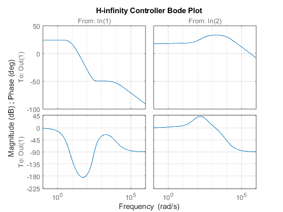
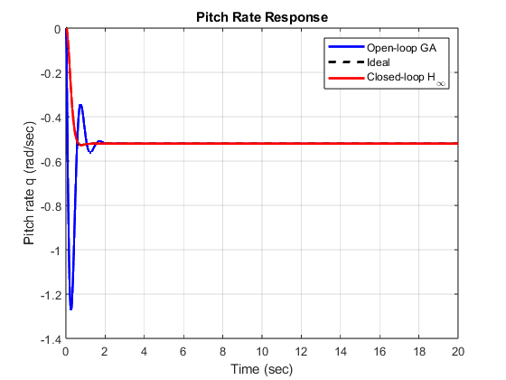
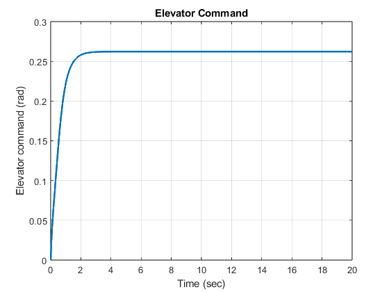
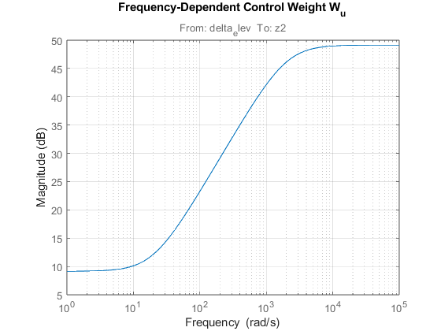
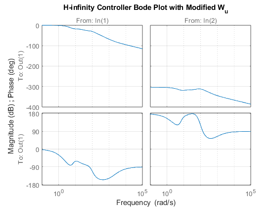
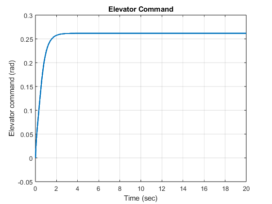
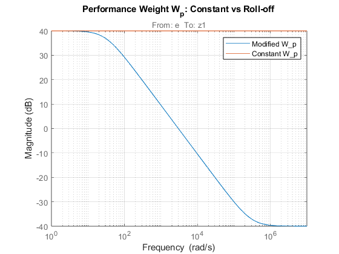
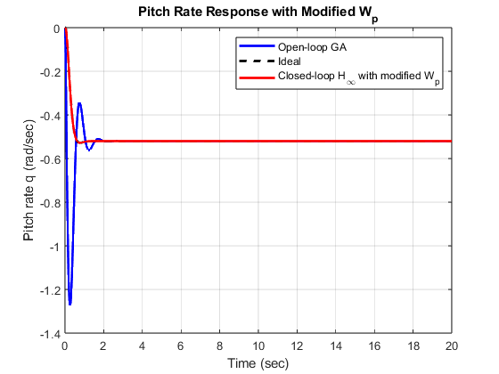
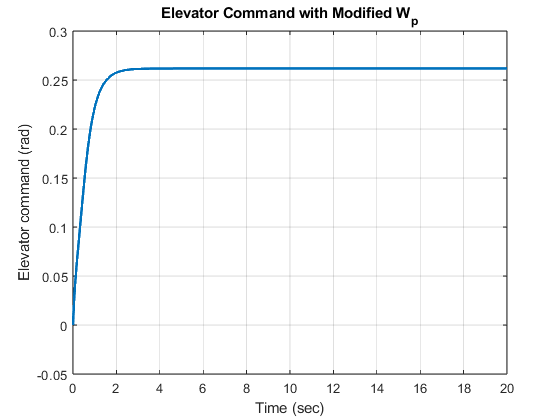

Contents
- 2.b
- 2.c
- Actuator
- Ideal model from 2(a)
- Summing junctions
- Generalized plant
- 2.d
- bode plot of controller
- 2.e with modified W_u
- Re-design controller with new W_u
- Bode plot of new controller
- New closed-loop system
- 2.f Modified performance weight Wp
- Plot new performance weight
- Reset control penalty Wu to original constant value
- H-infinity synthesis
- Closed-loop systems
- Simulate
- Plot response
- Plot elevator command
A = [-2.4714 0.9514;
-43.9070 -3.4738];
B = [-0.2501;
-44.9478];
C = [0 1];
D = 0;
G = ss(A,B,C,D);
p = eig(A);
disp('Open-loop eigenvalues:')
disp(p);
sigma = real(p(1));
wd = imag(p(1));
wn = sqrt(sigma^2 + wd^2)
zeta_des = 0.8;
pd1 = -zeta_des*wn + 1j*wn*sqrt(1-zeta_des^2);
pd2 = conj(pd1);
disp('Desired closed-loop poles:')
disp(pd2);
s = tf('s');
Aact = 31.42/(s + 31.42);
pdes = [pd1, pd2];
den_damp = poly(pdes);
% Choose gain to match original DC gain
G_tf = tf(G);
Kdc = dcgain(G_tf) * den_damp(end);
Gdamp = tf(Kdc, den_damp)
Gideal = minreal(Gdamp * Aact)
Open-loop eigenvalues:
-2.9726 + 6.4438i
-2.9726 - 6.4438i
wn =
7.0964
Desired closed-loop poles:
-5.6771 - 4.2578i
Gdamp =
-100.1
---------------------
s^2 + 11.35 s + 50.36
Continuous-time transfer function.
Gideal =
-3145
--------------------------------
s^3 + 42.77 s^2 + 407.1 s + 1582
Continuous-time transfer function.
2.b
pilot_cmd = 0.2618; W_cmd = 1/pilot_cmd; actuator_lim = 0.349; d_max = actuator_lim * 0.15 W_dist = 1/d_max; gyro_noise = 0.0067; %rad/s W_noise = 1/gyro_noise; model_err = 0.01; % <=0.01 rad/s W_model = 1/model_err; W_u = 1/actuator_lim;
d_max =
0.0523
2.c
G.InputName = 'delta_actual'; G.OutputName = 'q';
Actuator
Aact.InputName = 'delta_total'; Aact.OutputName = 'delta_actual';
Ideal model from 2(a)
Gideal.InputName = 'pilot_actual'; Gideal.OutputName = 'q_ideal'; Wcmd_blk = tf(pilot_cmd); Wcmd_blk.InputName = 'Pilot'; Wcmd_blk.OutputName = 'pilot_actual'; Wd_blk = tf(d_max); Wd_blk.InputName = 'Dist'; Wd_blk.OutputName = 'dist_actual'; Wn_blk = tf(gyro_noise); Wn_blk.InputName = 'Noise'; Wn_blk.OutputName = 'noise_actual'; Wp_blk = tf(W_model); Wp_blk.InputName = 'e'; Wp_blk.OutputName = 'z1'; Wu_blk = tf(W_u); Wu_blk.InputName = 'delta_elev'; Wu_blk.OutputName = 'z2'; Wcmd_out = tf(W_cmd); Wcmd_out.InputName = 'pilot_actual'; Wcmd_out.OutputName = 'z3';
Summing junctions
sum_delta = sumblk('delta_total = delta_elev + dist_actual'); sum_error = sumblk('e = q - q_ideal'); sum_meas = sumblk('q_meas = q + noise_actual');
Generalized plant
P = connect(G, Aact, Gideal, ... Wcmd_blk, Wd_blk, Wn_blk, Wp_blk, Wu_blk, ... sum_delta, sum_error, sum_meas, ... {'Pilot','Dist','Noise','delta_elev'}, ... {'z1','z2','pilot_actual','q_meas'});
2.d
nmeas = 2; % number of measurements ncont = 1; % number of control inputs [K,CL,gamma] = hinfsyn(P,nmeas,ncont); disp('H-infinity optimal controller:') disp(K) disp('Closed-loop H-infinity norm:') disp(gamma)
H-infinity optimal controller:
1×2 ss array with properties:
A: [6×6 double]
B: [6×2 double]
C: [-9.8151 34.5776 -71.5020 0.5639 11.1905 217.4006]
D: [0 0]
E: []
Offsets: []
Scaled: 0
StateName: {6×1 cell}
StatePath: {6×1 cell}
StateUnit: {6×1 cell}
InternalDelay: [0×1 double]
InputDelay: [2×1 double]
OutputDelay: 0
InputName: {2×1 cell}
InputUnit: {2×1 cell}
InputGroup: [1×1 struct]
OutputName: {''}
OutputUnit: {''}
OutputGroup: [1×1 struct]
Notes: [0×1 string]
UserData: []
Name: ''
Ts: 0
TimeUnit: 'seconds'
SamplingGrid: [1×1 struct]
Closed-loop H-infinity norm:
0.9026
bode plot of controller
figure; bode(K); grid on; title('H-infinity Controller Bode Plot'); saveCurrentFigure('1d_hinf_controller_bode'); K.InputName = {'pilot_actual','q'}; K.OutputName = 'delta_elev'; G.InputName = 'delta_actual'; G.OutputName = 'q'; Aact.InputName = 'delta_elev'; Aact.OutputName = 'delta_actual'; CL_q = connect(G,Aact,K, ... 'pilot_actual', ... 'q'); CL_u = connect(G,Aact,K, ... 'pilot_actual', ... 'delta_elev'); t = 0:0.01:20; r = 0.2618*ones(size(t)); [y_cl,t] = lsim(CL_q,r,t); [u_cmd,t] = lsim(CL_u,r,t); [y_open,~] = lsim(minreal(G*Aact),r,t); [y_ideal,~] = lsim(Gideal,r,t); figure; plot(t,y_open,'b','LineWidth',2); hold on; plot(t,y_ideal,'k--','LineWidth',2); plot(t,y_cl,'r','LineWidth',2); grid on; legend('Open-loop GA','Ideal','Closed-loop H_\infty'); xlabel('Time (sec)'); ylabel('Pitch rate q (rad/sec)'); title('Pitch Rate Response'); saveCurrentFigure('2d_pitch_rate_response'); figure; plot(t,u_cmd,'LineWidth',2); grid on; xlabel('Time (sec)'); ylabel('Elevator command (rad)'); title('Elevator Command'); saveCurrentFigure('2d_elevator_command'); max(abs(u_cmd))
ans =
0.2622



2.e with modified W_u
s = tf('s'); Wu_bar = 1/0.349; Wu_new = Wu_bar*(s+20)/(0.01*s+20); Wu_new.InputName = 'delta_elev'; Wu_new.OutputName = 'z2'; figure; bodemag(Wu_new); grid on; title('Frequency-Dependent Control Weight W_u'); saveCurrentFigure('2e_frequency_dependent_control_weight');

Re-design controller with new W_u
P_new = connect(G, Aact, Gideal, ... Wcmd_blk, Wd_blk, Wn_blk, Wp_blk, Wu_new, ... sum_delta, sum_error, sum_meas, ... {'Pilot','Dist','Noise','delta_elev'}, ... {'z1','z2','pilot_actual','q_meas'}); [K_new,CL_new,gamma_new] = hinfsyn(P_new,nmeas,ncont); disp('H-infinity optimal controller with frequency-dependent W_u:') disp(K_new) disp('Closed-loop H-infinity norm with frequency-dependent W_u:') disp(gamma_new)
Warning: The following block outputs are not used: delta_total.
H-infinity optimal controller with frequency-dependent W_u:
1×2 ss array with properties:
A: [7×7 double]
B: [7×2 double]
C: [-0.2884 0.3247 -1.7280 0.0437 0.3369 2.1529 1.7941]
D: [0 0]
E: []
Offsets: []
Scaled: 0
StateName: {7×1 cell}
StatePath: {7×1 cell}
StateUnit: {7×1 cell}
InternalDelay: [0×1 double]
InputDelay: [2×1 double]
OutputDelay: 0
InputName: {2×1 cell}
InputUnit: {2×1 cell}
InputGroup: [1×1 struct]
OutputName: {''}
OutputUnit: {''}
OutputGroup: [1×1 struct]
Notes: [0×1 string]
UserData: []
Name: ''
Ts: 0
TimeUnit: 'seconds'
SamplingGrid: [1×1 struct]
Closed-loop H-infinity norm with frequency-dependent W_u:
0.7501
Bode plot of new controller
figure; bode(K_new); grid on; title("H-infinity Controller Bode Plot with Modified W_u") saveCurrentFigure('2e_hinf_controller_bode_modified_Wu');

New closed-loop system
Plant = minreal(Aact * G);
K_new.InputName = {'pilot_actual','q'};
K_new.OutputName = 'delta_elev';
G.InputName = 'delta_actual';
G.OutputName = 'q';
Aact.InputName = 'delta_elev';
Aact.OutputName = 'delta_actual';
CL_q = connect(G,Aact,K_new, ...
'pilot_actual', ...
'q');
CL_u = connect(G,Aact,K_new, ...
'pilot_actual', ...
'delta_elev');
t = 0:0.01:20;
r = 0.2618*ones(size(t));
[y_cl,t] = lsim(CL_q,r,t);
[u_cmd,t] = lsim(CL_u,r,t);
[y_open,~] = lsim(minreal(G*Aact),r,t);
[y_ideal,~] = lsim(Gideal,r,t);
figure;
plot(t,y_open,'b','LineWidth',2); hold on;
plot(t,y_ideal,'k--','LineWidth',2);
plot(t,y_cl,'r','LineWidth',2);
grid on;
legend('Open-loop GA','Ideal','Closed-loop H_\infty');
xlabel('Time (sec)');
ylabel('Pitch rate q (rad/sec)');
title('Pitch Rate Response');
saveCurrentFigure('2e_pitch_rate_response_modified_Wu');
figure;
plot(t,u_cmd,'LineWidth',2);
grid on;
xlabel('Time (sec)');
ylabel('Elevator command (rad)');
title('Elevator Command');
saveCurrentFigure('2e_elevator_command_modified_Wu');
max(abs(u_cmd))
ans =
0.2617

2.f Modified performance weight Wp
s = tf('s'); Wp_bar = W_model; % from 2(b), e.g. 100 if error limit = 0.01 wc = 30; % crossover frequency rad/s Wp_new = (0.01*s + Wp_bar*wc)/(s + wc); Wp_new.InputName = 'e'; Wp_new.OutputName = 'z1';
Plot new performance weight
figure; bodemag(Wp_new, Wp_blk); grid on; legend('Modified W_p','Constant W_p'); title('Performance Weight W_p: Constant vs Roll-off'); saveCurrentFigure('2f_performance_weight_Wp');

Reset control penalty Wu to original constant value
Wu_blk = tf(W_u); Wu_blk.InputName = 'delta_elev'; Wu_blk.OutputName = 'z2'; P_f = connect(G, Aact, Gideal, ... Wcmd_blk, Wd_blk, Wn_blk, Wp_new, Wu_blk, ... sum_delta, sum_error, sum_meas, ... {'Pilot','Dist','Noise','delta_elev'}, ... {'z1','z2','pilot_actual','q_meas'});
Warning: The following block outputs are not used: delta_total.
H-infinity synthesis
nmeas = 2; ncont = 1; [K_f,CL_f,gamma_f] = hinfsyn(P_f,nmeas,ncont); disp('H-infinity controller with modified W_p:') disp(K_f) disp('Closed-loop H-infinity norm with modified W_p:') disp(gamma_f) K_f.InputName = {'pilot_actual','q'}; K_f.OutputName = 'delta_elev'; G.InputName = 'delta_actual'; G.OutputName = 'q'; Aact.InputName = 'delta_elev'; Aact.OutputName = 'delta_actual';
H-infinity controller with modified W_p:
1×2 ss array with properties:
A: [7×7 double]
B: [7×2 double]
C: [-6.1209 13.7674 -42.0086 0.5469 7.0477 87.7599 9.6615]
D: [0 0]
E: []
Offsets: []
Scaled: 0
StateName: {7×1 cell}
StatePath: {7×1 cell}
StateUnit: {7×1 cell}
InternalDelay: [0×1 double]
InputDelay: [2×1 double]
OutputDelay: 0
InputName: {2×1 cell}
InputUnit: {2×1 cell}
InputGroup: [1×1 struct]
OutputName: {''}
OutputUnit: {''}
OutputGroup: [1×1 struct]
Notes: [0×1 string]
UserData: []
Name: ''
Ts: 0
TimeUnit: 'seconds'
SamplingGrid: [1×1 struct]
Closed-loop H-infinity norm with modified W_p:
0.7501
Closed-loop systems
CL_q_f = connect(G,Aact,K_f, ... 'pilot_actual', ... 'q'); CL_u_f = connect(G,Aact,K_f, ... 'pilot_actual', ... 'delta_elev');
Simulate
t = 0:0.01:20; r = 0.2618*ones(size(t)); [y_cl_f,t] = lsim(CL_q_f,r,t); [u_cmd_f,t] = lsim(CL_u_f,r,t); [y_open,~] = lsim(minreal(G*Aact),r,t); [y_ideal,~] = lsim(Gideal,r,t);
Plot response
figure; plot(t,y_open,'b','LineWidth',2); hold on; plot(t,y_ideal,'k--','LineWidth',2); plot(t,y_cl_f,'r','LineWidth',2); grid on; legend('Open-loop GA','Ideal','Closed-loop H_\infty with modified W_p'); xlabel('Time (sec)'); ylabel('Pitch rate q (rad/sec)'); title('Pitch Rate Response with Modified W_p'); saveCurrentFigure('2f_pitch_rate_response_modified_Wp');

Plot elevator command
figure; plot(t,u_cmd_f,'LineWidth',2); grid on; xlabel('Time (sec)'); ylabel('Elevator command (rad)'); title('Elevator Command with Modified W_p'); saveCurrentFigure('2f_elevator_command_modified_Wp'); disp("max actuator value with modified W_p:") max(abs(u_cmd_f))
max actuator value with modified W_p:
ans =
0.2617
